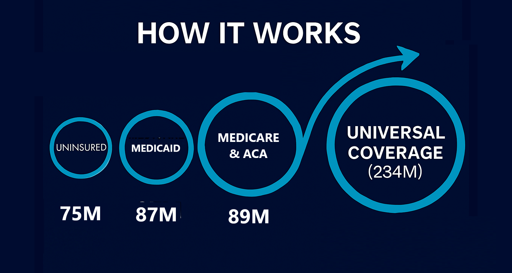

Congress Won't Fix Healthcare. Organized Citizens Will.
PHIERS is a public-interest movement building coordinated citizen pressure across every congressional district — with real leverage and a real plan.
This isn't a petition. It's a pressure system.
- Your name is counted by congressional district
- District participation builds measurable political leverage
- Leverage escalates publicly toward key milestones
- Power responds when pressure becomes unavoidable
History shows that when 3.5% of the population organizes, systems are forced to change.
The PHIERS Timeline — Section 9 Constitutional Requirements
March 28, 2026 — No Kings Rally
3.5% participation = 11.6 million signatures
We bring organized citizen leverage to a national moment of visibility and accountability.
What happens before March 28 determines what power must respond to after.
July 4, 2026 — Economic Independence Day
100 Million Americans coordinated
Independence Day becomes the day we declare economic independence from corporate control.
When 100 million Americans coordinate around healthcare reform, Congress has no choice but to act.
The PHIERS Strategy — At a Glance
Critical Mass
3.5% participation has repeatedly triggered systemic change across history — from civil rights movements to democratic transitions worldwide.
District-Level Pressure
Members of Congress don't fear "the nation." They fear their own district. PHIERS applies pressure locally, where representatives are most vulnerable.
Replacement Threat
When enough voters in a district coordinate around a single demand, incumbents move — or lose. We help recruit and support replacements who will act.
Existing Law
We're not waiting for a miracle bill. We're using authority that already exists under the ACA to force telehealth coverage.
The Math Works
$600 per person per year via telehealth covers 80% of healthcare needs for 234 million Americans — without new taxes and without killing private insurance.
How It Works — The Telehealth Cascade
The Exponential Mechanism
Congress allows telehealth through the ACA exchange immediately. One person's $600 annual savings funds 12 others. Those 12 fund 148. Exponential. Unstoppable.
The Nine Iterations to 234 Million
- Iteration 1: 1 → 12 (12 people covered)
- Iteration 2: 12 → 148 (148 people covered)
- Iteration 3: 148 → 1,825 (1,825 people covered)
- Iteration 4: 1,825 → 22,500 (22,500 people covered)
- Iteration 5: 22,500 → 277K (277,000 people covered)
- Iteration 6: 277K → 3.4M (3.4 million people covered)
- Iteration 7: 3.4M → 42M (42 million people covered)
- Iteration 8: 42M → 520M (full U.S. population exceeded)
- Iteration 9: Mathematical overshoot proves universal coverage capacity
Each iteration takes 1-3 months. Full cascade: 9-27 months to universal coverage.
The 3.5% Rule
Harvard researcher Erica Chenoweth's research shows that when 3.5% of a population actively engages in sustained nonviolent resistance, success becomes inevitable.
For the United States, 3.5% = 11.6 million people. PHIERS is building toward that critical mass by March 28, 2026.
What Signing the PHIERS Petition Actually Does
Your signature is not a "like." It's a coordination signal that lets us map where pressure already exists — district by district — and where we need to grow.
- Step 1: You sign with your district information
- Step 2: Your district is added to the PHIERS pressure map
- Step 3: When enough people in your district sign, we trigger local escalation: coordinated calls, media pressure, and candidate commitments
- Step 4: If your member of Congress refuses to move, we help recruit and support a replacement who will
No spam. No selling. No gimmicks.
Just organized citizens building real leverage.
We Are the TEETH
Power concedes nothing without a demand.
PHIERS gives citizens the TEETH — organized, strategic, collective force — to make that demand unavoidable.
What PHIERS Is
- A public-interest movement
- Citizen-driven and non-corporate
- Strategy-based, not vibes-based
- Built for accountability
What PHIERS Is NOT
- A company
- An insurance product
- A political party
- A fundraising scheme
Explore the Complete Plan
We've mapped the legal authority, the telehealth math, and the district-level strategy into a concrete plan. If you're the kind of person who needs to see the receipts before you move, that's exactly who we built this for.